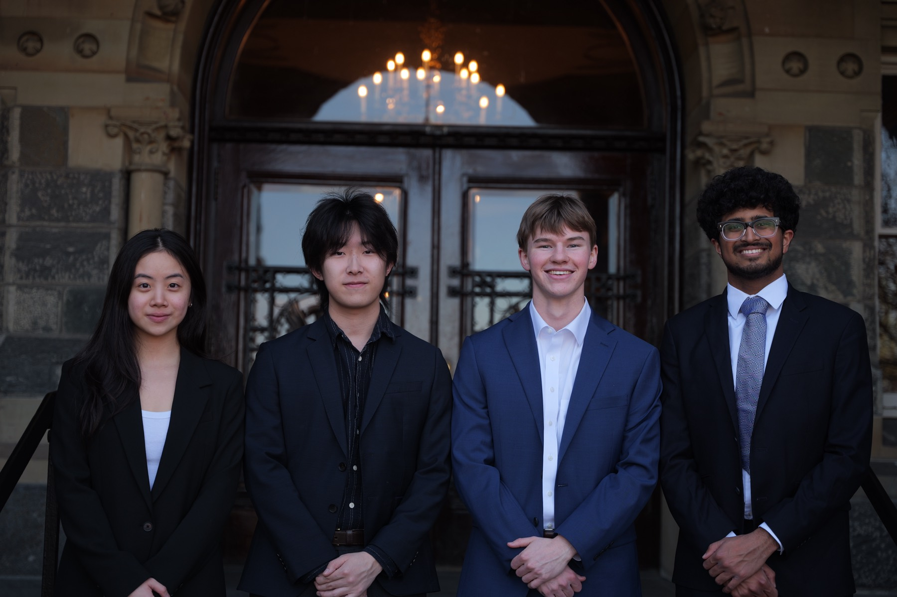

Fellowship & Projects
Twelve weeks of training, then a real client.
Every new member spends their first semester in the Product Fellowship, then joins a project team working directly with a client company on a real engagement.

What your first semester looks like
Fellowship
Twelve weeks of product management curriculum, running lecture and lab from late September through December.
Capstone
You are placed on a team in week two and build a product alongside the curriculum, presenting to the full membership and industry professionals in December.
General body meetings
The full club meets weekly for speaker events, case studies, and workshops.
Recruiting support
Support from senior members on learning about and preparing for the recruiting process.
Beyond the curriculum
The fellowship runs alongside the rest of club life rather than in place of it. Members sit weekly general body meetings, speaker events, and workshops through the semester.
We also run events with industry partners, including a product case competition hosted with Perplexity, where members work a real product problem end-to-end and present it.

What you'll cover
Twelve weeks, most of them pairing a lecture with a hands-on lab. The curriculum moves in order, from what the job is through discovery, business validation, design, and the metrics and technical fundamentals you need to work with engineers.
-
Foundations
What a product is, what a product manager actually does, cross-functional collaboration, and the product development life cycle.
-
Methodology
The move from waterfall to iterative work. Agile, Scrum, and Lean, with sprint planning and backlog management in Jira.
-
Discovery
User surveys and customer interviews, identifying real pain points, and building personas, stories, and user journeys.
-
Business
Market and competitive research, business outcome estimation, and deciding whether a thing is worth building at all.
-
Design and build
MVP scoping, prioritization frameworks, Figma wireframes and prototypes, and UI and UX principles.
-
Metrics and technical
KPIs and the HEART framework, A/B testing, APIs, and full stack and cloud fundamentals.
Alongside it you sit weekly labs, general body meetings, and speaker events, and you close the semester presenting your capstone. Total commitment is about four to six hours a week.
Every new member builds a product from scratch
Teams form in week two and build alongside the curriculum. Each team gets a mentor from the board. In December, teams present to the full membership and to industry professionals, and the strongest project could receive funding.
Recent capstones include Reverb, which synthesizes your calendar, email, and coursework into a daily briefing and prioritized action plan, delivered as a five-minute audio briefing or a skimmable one-pager; and Soundscape, which generates playlists from where you are, surfacing local artists and neighborhood music scenes as you move between cities.

- Weeks 2–3
Team formation
Teams form and select the problem they want to go after.
- Weeks 3–4
Research
User interviews and market research to validate the problem is real.
- Weeks 5–6
Scoping
MVP scoping, wireframes, and a written PRD.
- Weeks 7–9
Build
Prototype build and defining the metrics that count as success.
- Weeks 11–12
Final pitch
Presentation prep and the final pitch to industry professionals.
Prompting alone is table stakes
Product Space members are the most AI-capable builders on campus, and we teach several layers deeper than prompt writing. Members learn to direct AI, not just talk to it.
- MCP servers and tool integrationWiring models into the systems they need to act on.
- Agentic workflows and orchestrationDesigning multi-step work that runs without a human in every loop.
- Evals and prompt architectureMeasuring whether the thing you built actually works.
- Vibecoding with Claude Code and CursorShipping working software as a non-engineer.
- Context engineeringGetting the right information in front of the model at the right time.
- Model selection and cost tradeoffsChoosing what to run, and knowing what it costs you.

What You'll Get
Fellowship graduates apply their training on real client engagements, build a portfolio of zero-to-one work, and join a network of alumni at top companies.
-
Real Client Work
Apply what you learn directly on real engagements for companies and organizations
-
Community
Join a network of peers, board members, and alumni working in product
-
A Portfolio
Leave with concrete, shippable work to show for your time in the club
-
An Alumni Network
Tap into graduates now working in product at top companies
Project Teams
After the fellowship, you work on a real client.
Project teams are where the curriculum stops being theory. You join a small pod assigned to a company, own a piece of the work, and take it through a midterm and a final deliverable the client actually uses.
What you'll actually do
You'll join a pod of four to six product analysts under a senior analyst and a project manager, and run a real ten-to-twelve-week engagement end to end: research, a midterm review, iteration, and a final deliverable the client actually uses.
Lead well and the ladder is real — analysts move up to senior analyst, then project manager, in later semesters.

What you'll walk away with
Teams are staffed for real strength across each domain, so what you work on depends on what the client needs and where you're strongest.
Recent teams have shipped work for Google, Uber, The Washington Post, and more. See the full portfolio
Fall 2026 applications are open
Applications are due September 8, 11:59 PM. No prior product experience required.